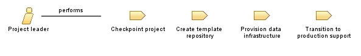

| Role: Project leader |
 |
|
Relationships
 |
||
| Primary Performs | ||
|---|---|---|
| Modifies |
|
|
| Process Usage | ||
Main Description
Le chef de projet exécute les tâches suivantes :
Créez un référentiel de projet sous le projet d'équipe et générez-le à partir du référentiel de modèles de projet
Team. |